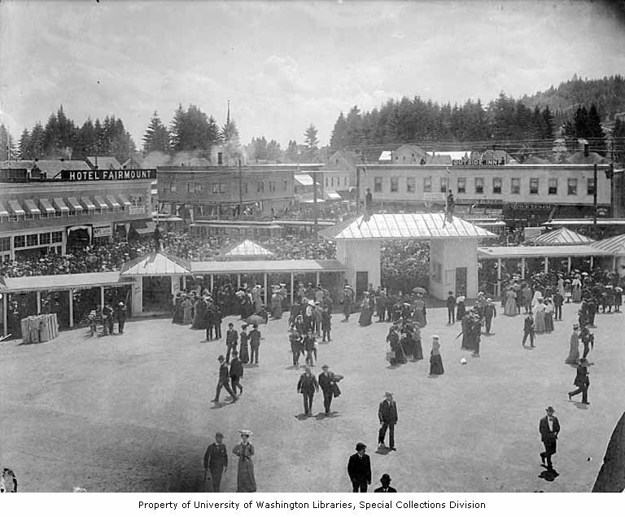

TITLE
Location in 1905: 45.53646033, -122.7045688
Current Location: Same
Not part of the exposition, but a hotel build next to the entrance, specifically
to house visitors. It is the only structure connected to the exposition that
still exists and is still at its original location. It is now a low-income
apartment building.
